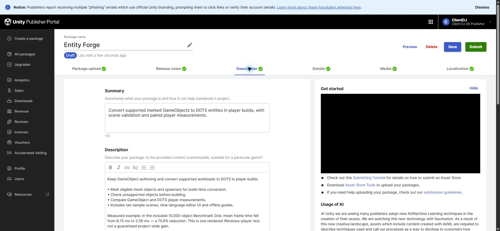
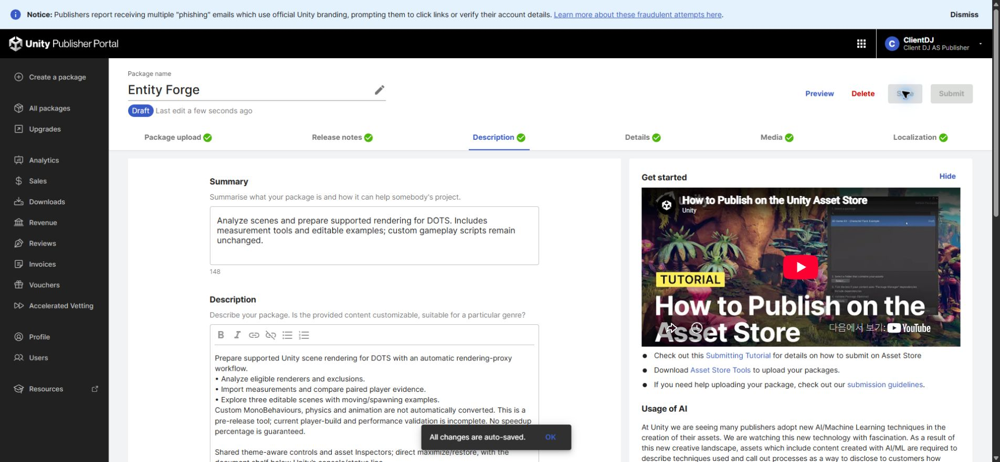
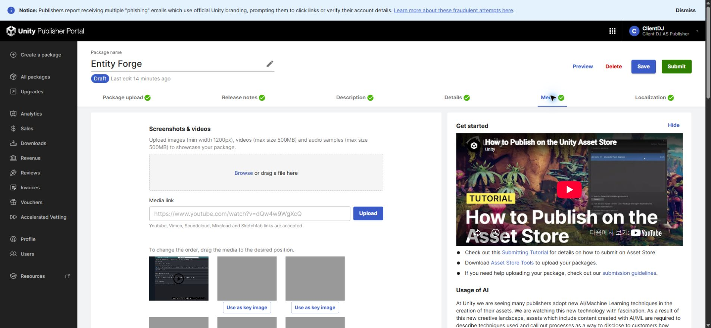

Tracefolio REPORTS & ISSUES
Tracefolio REPORTS & ISSUESEntityForge 판매 초안 최신화 및 제출 전 검토
검증 대기4개 언어 초안 저장·재열기 대조 완료. 최신 패키지 설치 검증과 미디어 검증은 제출 전 필수 잔여 사항입니다.
작업 결과
판매 초안 저장은 완료했습니다. 최종 제출은 미실행이며 릴리스 준비 검증은 계속 필요합니다.
변경 내용
적용 내용
영어·한국어·일본어·중국어 판매 정보와 변경 이력을 저장했습니다. 공통 테마 UI·Inspector, 최대화·복원 직접 전환과 콘솔 상태줄 아래 문서 목록을 반영했습니다. 판매 버전을 0.2.0-preview로 갱신하고 자동 렌더링 프록시 범위와 사용자 설치 의존성, 변환 제외 대상 및 현재 빌드·성능 검증 제한을 4개 언어에 반영했습니다. 이전 성능 수치를 현재 검증값으로 재사용하지 않았습니다.

수정 전 실제 포털 화면입니다.

저장 후 실제 포털 화면입니다. 캡처 원본을 이미지 편집 없이 보존했습니다.
검증
새로 페이지를 열어 4개 언어의 저장값을 대조했고 모두 일치했습니다. Pixel Camera·Entity Forge의 첫 변경 이력 저장 실패는 보존하고 짧은 출시 기록으로 수정 후 재검증했습니다. 원인은 미확인입니다.
갤러리 16장, 영상 1개, 키 이미지 3개를 실제 포털에서 확인했습니다. 검토된 기존 Affinity 출력 16장을 업로드하고 기존 1장을 백업 후 교체했습니다.

52개 어셈블리의 잘못된 core→Samples/Development 참조 0건. 배포 파일의 개발 에셋 참조·자동 패키지 설치 코드 후보·비표준 제품 메뉴 경로 0건. 정적 검사 결과이며 실제 설치 검증을 뜻하지 않습니다.
후보 파일 399개, 24544524 bytes. SHA-256 89558c30135a69a52ed72c7c2a67b877db9b1e529aca81f02774b183e799044d. 아카이브의 에셋·메타데이터 재읽기 및 생성 당시 소스 동일성 확인. 튜토리얼 파일은 네이티브 의존성 가지치기 없이 유지했습니다.
교훈 검토: 기존 산출물 고정·저장 후 재읽기·미실행 QA 구분 지침으로 충족하므로 전역 지침 변경 없음. 적용 범위는 이번 판매 초안과 후보 패키지 검사입니다.
남은 사항
포털 업로드 패키지는 최신 소스와 다릅니다. 새 후보는 파일 방식으로 생성·재읽기한 산출물이며 Unity 네이티브 내보내기·새 프로젝트 설치·샘플 제거 후 컴파일·공식 Validator는 미실행입니다. 실행 중이던 대상 Unity 호스트가 종료되어 GUI 신규 실행 없이 진행할 수 없습니다. 공식 Validator는 진행창 표시 또는 별도 Unity 실행을 사용하므로 화면 조작 금지 조건에서 보류했습니다. 신규 오디오 포함 홍보 영상의 실제 청취·포털 교체·재확인이 남아 있습니다. 따라서 제출 준비 완료로 판정하지 않으며 Submit은 누르지 않았습니다.
작업 시간
- 제안 시간: 최초 10
20분, 제출 전 추가 검토 1020분 - 실제로 완료된 시간: 2026-11-03 01:48:38 KST 시작. 03:03 KST 기준 약 74분 경과. 브라우저 다운로드 도구 약 20분 정체 포함, 예상 초과. 보고서 배포 확인 중이며 잔여 릴리스 검증은 미완료.
- XERJ: 실패 — XERJ 노드 미실행; rg 및 현재 소스·실제 포털 저장값으로 대체 검증